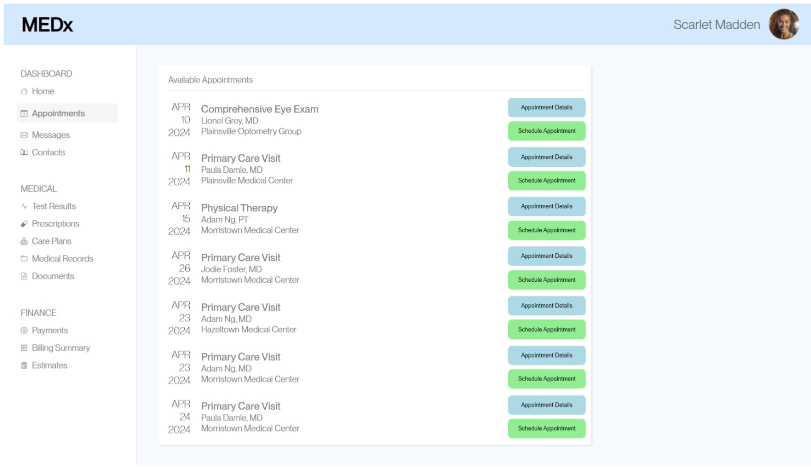

To investigate how small changes in UI and UX could be reflected in user statistics, we were tasked with scheduling an appointment with Adam Ng, MD on April 23rd at the Morristown Medical Center given a website page from an appointment scheduling software. Then, we were each asked to edit the page in some way that would improve the usability of the page, with the goal being to collect data on various metrics from both the original and new page so that we can come to statistically supported conclusions about whether usability has actually changed, and if so, in what ways it has. In particular, A/B Testing helps us to make useful observations because such experiments are reproducible and mathematically supported, simulate a realistic test environment, and allow us to iteratively discover pain points in our user interface.
I decided to modify the given webpage by recoloring the buttons to alternate between blue and green, and for each button to change color when the user hovers above it. Finally, I changed the "See Appointment" Button label to be "Appointment Details" for clarity.
I was interested in how my modifications would affect three different metrics, namely the misclick rate, time spent on the page, and the time until first click. I created a null and alternate hypothesis for each of these data types:
Null Hypothesis: There will be no difference in the misclick rate between users that interact with version A and users that interact with version B
I predict that we will reject this null hypothesis because I think my modifications will substantially improve users ability to differentiate the different categories of buttons, leading to a decreased number of incorrect buttons pressed, especially those buttons intended to show users appointment details.
Alternative Hypothesis: There will be a difference in the misclick rate between users that interact with version A and users that interact with version B
I believe that this will be the case because the clarification in title of the "See Appointment" button, along with a color distinction, will lead to fewer people incorrectly selecting that option under the correct doctor, date, and town.
Null Hypothesis: There will be no difference in the time spent on the page between users that schedule appointments with version A and users that schedule appointments with version B
I predict that we will reject this null hypothesis because I think my modifications will substantially decrease users time visually searching for the button associated with their appointment.
Alternative Hypothesis: There will be less time spent on the page between users that schedule an appointment with version B as compared to users that schedule an appointment with version B
I believe that this will be the case because I think the recoloring of the buttons will decrease the time users spend clicking incorrect buttons and searching for the button in the same row as the appointment they want to schedule.
Null Hypothesis: There will be no difference in the time to the first click between users that interact with version A and users that interact with version B
I predict that we will reject this null hypothesis because I think my modifications will decrease the time that users spend looking for the correct button, and fewer users will become frustrated and click aimlessly or haphazardly.
Alternative Hypothesis: There will be a difference in the time to the first click between users that interact with version A and users that interact with version B
I believe that we will find statistically significant evidence that the alternative hypothesis is true because I think my modifications will decrease the variance in time to first click, as many users will be more patient with the software and less time will be spent on the page in total.
In the given webpage without my modifications, there were 7 misclicks and 27 non-misclicks, and on the webpage with my changes there were 3 misclicks and 27 non-misclicks.
The Chi Squared Test resulted in a chi^2 value of 1.36, and a p-value of 0.24.
I chose the Chi Squared Test for this metric because the test was categorical in nature -- we did not have the number of misclicks, for example, but only whether each user did or did not make at least one misclick. A Chi Squared Test would tell us whether the frequency of a user being in the misclick group was different between the two pages.
Because my p-value is greater than my significance level (p>0.05), I fail to reject the null hypothesis and do not find statistically signficant evidence that the alternative hypothesis is true.
Although I find that my modifications decreased the expected number of misclicks by an average of roughly 1, analysis shows that there is not enough evidence to conclude that my changes had a true effect on this metric.
In the first iteration of the webpage, the average time spent on the page was 12.86 seconds, whereas the page with my changes has an average time on page of 8.74 seconds.
The One-Tailed T-Test resulted in a T-score of -1.89 and a p-value of 0.033 that the time users spent on my page was less than the time users spent on the unmodified page.
I chose the One-Tailed T-Test for this metric because the test was quantitative, and I was purely interested in whether my modifications caused a reduction in time spent on the page, rather than any difference at all.
Because my p-value is less than my significance level (p<=0.05), I reject the null hypothesis and find statistically signficant evidence that the alternative hypothesis is true.
It is likely that my modifications resulted in a more usable and less time consuming page for users! On average, users spend as much 4 fewer seconds on my page than the given webpage, and my analysis shows that this is likely to be a true difference. I think that this difference is primarily due to a decrease in time required to differentiate between the original "See Appointment" buttons and "Schedule Appointment" buttons from the functions being assigned different colors. It is also likely that the time decrease was influenced by a faster visual search in the "F" Scan Pattern across the page to the button from the desired appointment.
Without my changes, the average time until the first click was 5.54 seconds, and the average time before the first click on the appointment scheduling page with my button styling changes was of 4.58 seconds.
The Two-Tailed T-Test resulted in a T-score of -1.11 and a p-value of 0.27 that the time users spent on my page was less than the time users spent on the unmodified page.
I chose the Two-Tailed T-Test for this metric because the test was quantitative, and I wanted to know if my modifications made any difference at all in this metric, whether it increased or decreased the average time until the first click.
Because my p-value is greater than my significance level (p>0.05), I fail to reject the null hypothesis and do not find statistically signficant evidence that the alternative hypothesis is true.
Although my prediction was correct that my modifications decreased the variance in the time spent until the first click (from 19,411,963ms to 5,289,155ms), it is unlikely, according to my analysis, that I made any true difference in the time until the first click on the page. This makes sense to me, especially as an average, and perhaps a different statistical test could point to a different merit of my changes. It seems as though a decreased variance could still represent a more usable page -- although I cannot provide evidence that my changes made a difference, I think that evaluating this further could lead to other interesting results.